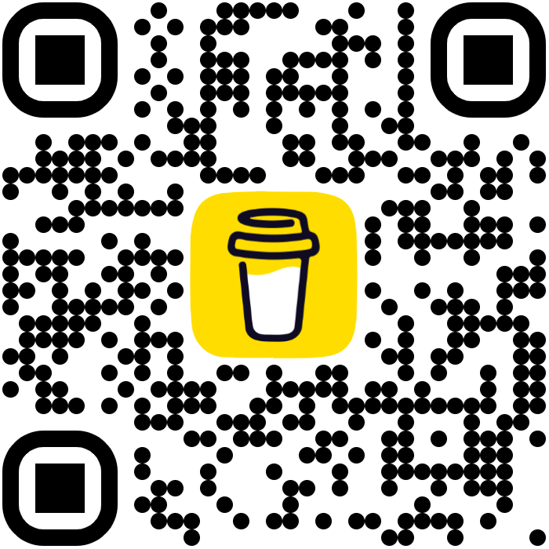

Xavier transforme un mur de post-it en plan d'action. Puis Michael présente Hermes, son agent self-hosted.
Ouvrir un café-restaurant à Vieux-Habitants : un mur de post-it manuscrits, une photo. L'IA transforme le désordre en plan exploitable.
Déchiffre l'écriture manuscrite, même collée en vrac sur le mur.
Range les idées par catégorie : concept, cible, offre, logistique, com.
Repère les manques, signale les incohérences, esquisse un modèle économique.
Self-hosted, persistant, multi-canal. Un assistant qui apprend de vos usages et fabrique ses propres compétences.
Mémoire long terme : il se souvient d'une session à l'autre, sur tous les canaux.
Telegram, WhatsApp, Discord, CLI : une conversation, partout.
Crée tout seul des skills réutilisables, au fil de l'usage.
Tu lances une demande depuis ton mobile.
Tu la reprends côté équipe, même contexte.
Tu l'enchaînes en terminal pour aller plus loin.
Hermes garde le fil, partout et dans le temps.

Offrez-nous un café